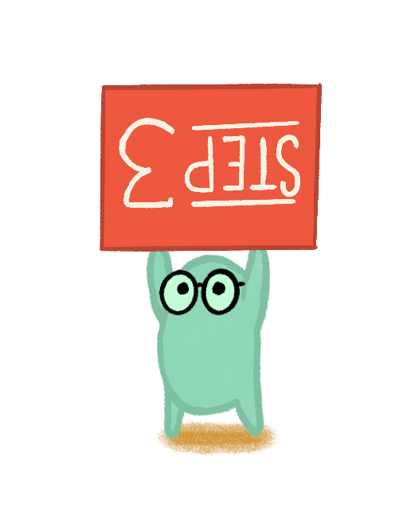
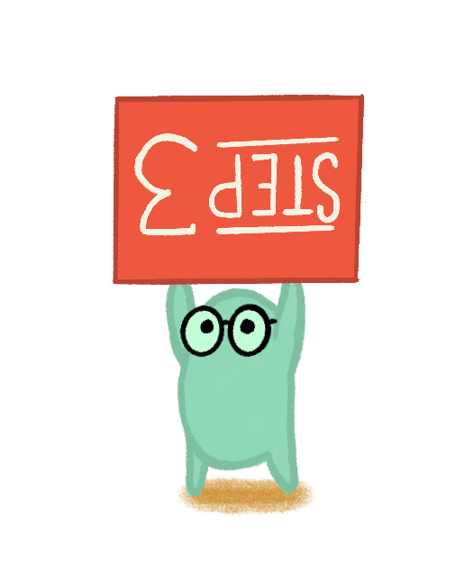

About
Driven by my passion for learning, I've embraced a wide range of artistic and technical disciplines, mastering skills across various domains. While some believe that diversifying one's expertise leads to mediocrity, I've discovered that exploring multiple disciplines actually enhances my ability to learn quickly. From carpentry to programming, I've immersed myself in diverse fields. Despite the notion that specialization is paramount, I firmly advocate for the strength found in embracing diverse skill sets, which fosters innovation and resilience in both individual capabilities and societal progress.
Process
While the creative journey varies for each individual, I've honed my approach to encompass three fundamental steps. Embracing these principles has allowed me to consistently advance towards a final product that not only reflects my vision but also amplifies the essence of the message I aim to convey.
1 - Identify the Essence
I always kick off my creative process by honing in on the core message or issue at hand. No matter the goal, understanding the essence is crucial. I delve deep to distill the task down to its purest form, not just focusing on what needs to be done, but why it matters. Take designing a book cover, for example. It's not just about making it visually appealing; it's about capturing the very soul of the literature and enticing the target audience to pick it up and dive into its pages.

2 - Ideate and Explore
Once I've nailed down the essence, I plunge into a whirlwind of creativity to generate ideas. This phase is all about exploring every possible avenue, regardless of whether it seems promising or not. I love diving into idea mash-ups and mind mapping, allowing both great and not-so-great ideas to surface. This expansive exploration ensures that I leave no stone unturned and consider every potential solution. By examining the problem from multiple angles and embracing a diversity of possibilities, I set the stage for innovative solutions.
3 - Harness Boredom for Creativity
Contrary to common belief, boredom can be a powerful catalyst for creativity. After sifting through countless ideas, I know it's essential to take a step back and let my mind wander. I engage in seemingly mundane activities like going for a walk or reading an unrelated manual. These moments of mental downtime provide fertile ground for new connections and insights to emerge. By welcoming boredom and giving my mind space to roam, I often stumble upon unexpected solutions or fresh perspectives that were previously elusive. After letting my mind wander, I return to my project with renewed clarity. This intentional pause allows for a more refined and insightful evaluation, leading to further iterations and ultimately, a well-crafted solution.


 
